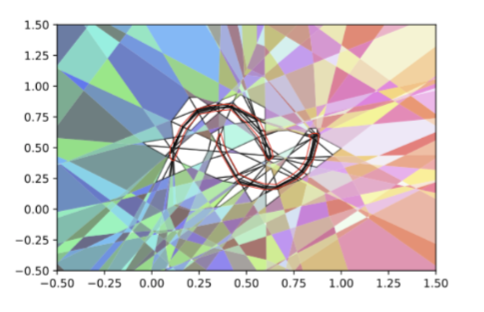

|
I work as a research scientist, Deep Learning and Artificial Intelligence Group, TCS Research in New Delhi, India, where my main focus is on computer vision and trustworthy machine learning. My doctoral research advised by Prof. Chetan Arora at IIT Delhi is centered on proposing novel methods for trustworthy/reliable deep neural networks (DNNs) Prior to this, I was fortunate to be working with Prof. Ramakrishna Kakarala at Nanyang Technological University on High Dynamic Range Imaging algorithms which formed a part of the image processing pipeline aimed at smartphone cameras. Our research was recognized with the Best Student Paper award at the 2012 SPIE conference in Burlingame, California. I completed my master's degree at DCUs School of Electronic Engineering and Computing in 2014, advised by Prof. Noel O'Connor and Prof. Alan Smeaton. I focused on reducing false alarms in surveillance camera networks. As a result of this work, a portion of our research was licensed to Netwatch Systems. In June 2015, I started working as a research scientist at TCS Research. In addition to my work on computer vision and machine learning, I have also been involved in various projects related to augmented reality. Specifically, I have focused on optimizing the layout of labels for immersive experiences and developing gestural interfaces for head-mounted devices and smartphones. As a team leader, I have overseen the development of a cost-effective industrial inspection framework. Recently, my team has been working on developing affordable solutions for motion capture and deformation capture. > Email / Google Scholar / Twitter / Github |

|
|
I'm interested in visual computing (computer vision, computational photography, and computer graphics) and reliable/robustness in machine learning (out-of-distribution detection, Deep neural network calibration, uncertainty quantification, continual learning). Representative papers are highlighted. |
|
|
Shubh Maheshwari, Rahul Narain, Ramya Hebbalaguppe, IEEE/CVF Conference on Computer Vision and Pattern Recognition (CVPR), 2023 project page Transfer4D transfers motion from a commodity depth sensor to a virtual model. The goal of our work is to democratize animation transfer using commodity depth sensors and alleviate the animators effort by automating the rigging and animation transfer process. |
|
|
Rishabh Patra*, Ramya Hebbalaguppe*, Tirtharaj Dash, Gautam Shroff, Lovekesh Vig, IEEE/CVF Winter Conference on Applications of Computer Vision, 2023 -- [Spotlight Presentation] project page We demonstrate state-of-the-art Deep Neural Network calibration performance via proposing a differentiable loss term that can be used effectively in gradient descent optimisation and dynamic data pruning strategy not only enhances legitimate high confidence samples to enhance trust in DNN classifiers but also reduce the training time for calibration. |
|

|
Ramya Hebbalaguppe, Soumya Suvra Ghosal, Jatin Prakash, Harshad Khadilkar, Chetan Arora, European Conference on Machine Learning , 2022 project page We propose a novel Compounded Corruption(CnC) technique for the Out-of-Distribution data augmentation. One of the major advantages of CnC is that it does not require any hold-out data apart from the training set. Our extensive comparison with 20 methods from the major conferences in last 4 years show that a model trained using CnC based data augmentation, significantly outperforms SOTA, both in terms of OOD detection accuracy as well as inference time. |
|
|
Ramya Hebbalaguppe*, Jatin Prakash, Neelabh Madan*, Chetan Arora, IEEE/CVF Conference on Computer Vision and Pattern Recognition (CVPR) , 2022 -- [ORAL Presentation] project page We propose a novel auxiliary loss function: Multi-class Difference in Confidence and Accuracy (MDCA) for Deep Neural Network calibration. The loss can be combined with any application specific classification losses for image, NLP, Speech domains. We also demonstrate the utility of the loss in semantic segmentation tasks. |
Current team at TCS Research, IIT Delhi
- Dr. Swapna Agarwal (ISI Kolkata) Topic: Shape correspondence
- Shubh Maheshwari (IIIT Hyderabad) (Full time researcher)Topic: Frugal motion capture and animation transfer
- Jai Bhardhan (IIIT Hyderabad) (Predoc Fellow)Topic: Skeletonization and Shape correspondence
- Aravind Udupa (Maths and Computing, IITD (Summer'23 Intern)) Topic: Skeletonization using Local seperators
- Adarsh Kappiyath (Indian Institute of Space Science and Technology) (Predoc Fellow) Topic: Continual Learning
- Goirik Chakrabarty (IISER (Pune)/IISc) (Predoc Fellow) Topic: Few Shot continual learning
- Anmol Garg (IISc, Bangalore) (Dec'22 and Summer'23 Intern) Topic: Continual Learning
Supervised the following full-time researchers/research interns
- Surabhi Nath → Doctoral student at the Max Planck School of Cognition and the MPI for Biological Cybernetics
- Meghal Dani → Doctoral student at IMPRS-IS, Max Planck School
- Gaurav Gupta → Doctoral student at Rice University
- Apoorv Khattar → Doctoral student at University of Manchester, UK
- Neel Rakholia → Masters Student at Stanford
- Sharan Yalburgi → Visiting researcher at MIT proabilistic ML project
- Srinidhi Hegde → Masters Student at UMD
- Shubh Maheshwari → Graduate student at UCSD
- Pranay Gupta → Masters student at CMU
- Jitender Maurya → Researcher, Toshiba
- Archie Gupta → SDE, Microsoft
- Varun Jain → Masters student at CMU → Microsoft Fellow
- Shreyash Mohatta → Masters student at NCSU
- Additya Popli → SDE at Google
- Kshitijz Jain → Grad student at IITD
- Soumya Suvra Ghosal → Masters Student at University of Wisconsin
- Jatin Prakash → Research Fellow, MSR
- Neelabh Madan → Research Fellow, MSR
- Gaurav Garg → Accenture
- Ramakrishna Perla → TTEC Digital
- Rishabh Patra → SDE Amazon